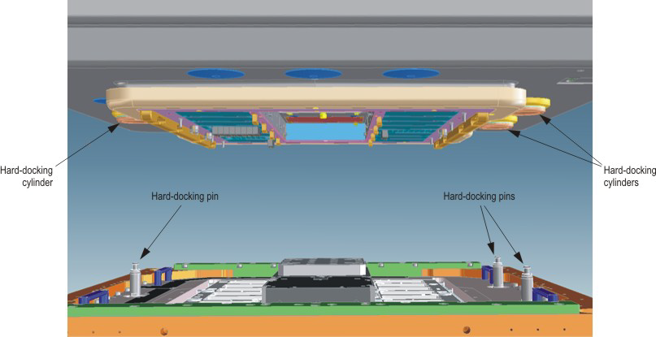

Hard docking for Direct-Probe
The functional components of the hard docking hardware are three cylinders, and three coarse alignment pins which fit into the cylinders. It is used to have a coarse alignment between tester and prober or handler before the DUT board is connected (DUT docking). Additionally there is a higher mechanical stability for the connection of the test head and the handler or wafer prober. For detailed information, see Hard Docking Interface in the CTH Service Guide Part 2.
Usage
The hard docking interface can only be used with the remote control:
- Fix the docking cylinders by using the Hard-Dock button. Press the neutral button when the test head is docked.
- Release the docking cylinders by using the Hard-Undock button. Press they neutral button when the test head is undocked.
- Fixing and releasing the docking cylinders excludes each other. When one operation is done,
the other cannot be activated before the neutral position is entered (the override button
cannot be used to force the opposite operation without entering neutral position).CAUTION In case of emergency, it is possible to release the docking cylinders manually (without electricity, but compressed air must be available) by accessing the according valve directly.Note When there is no hard docking sense available (non-Advantest interface, or no hard docking interface at all) there must be a jumper between the sense lines; otherwise the manipulator motor can only be activated while the override button is pressed. The hard docking sense cable is connected to the beeper board (as usual) and a jumper has to be placed at the other end of the cable. The jumper is also part of the cable set; the hard docking sense cable belongs to.

Locking
The docking cylinders cannot be released when a DUT board is docked to the test head (DUT docking, the undock mechanism is locked when the DUT interface is in docked position, even if there is no DUT board present). It is possible to release the docking cylinders by using the override button.
Two short beeps within about 0.4 s indicate prevented undocking. The LEDs indicate the reason:
- DD LED indicates that there is a docked DUT board.
- HD LED indicates that hard docking is active.
You cannot move the test head in vertical direction using the manipulator motor as long as the hard-docking cylinders are fixed. Press the override button to move the test head vertically.
In case of a disconnected hard docking sensor, the locking mechanism is always active.
Functional changes
- Introduced in SmarTest 6.5.4